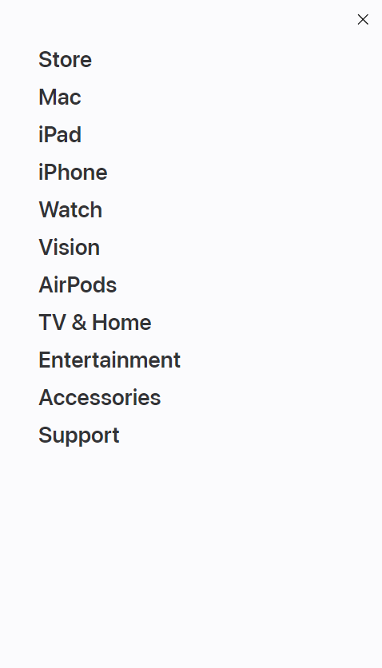
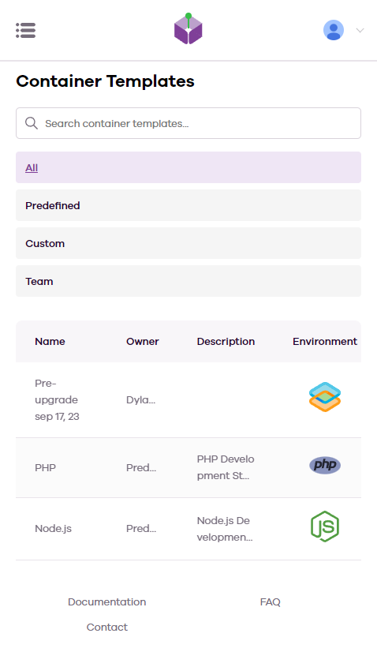

Hicks's Law
Apple Hicks's Law describes the relationship between the number of options in a menu and the amount of time it takes for a user to choose one, once presented with the menu. Generally, the more options the menu has, the less effect adding more options to the menu will have to navigation time. Apple.com's mobile site demonstrates this by having a relatively long main menu, as depicted in the image.
PARC: Alignment
Unreal EngineThe Alignment principle of the PARC acronym refers to the need to have various elements in a page aligned with one another to show relevance and prevent elements from being presented in isolated and haphazard manners. This example uses the alignment of the images, their labels, and their captions to indicate relevance and importance of what the commpany is saying.
Fits's Law
CodeAnywheere Fits's Law describes the relationship between the size of a button, the distance to the button, and the amount of time it takes to move your hand or mouse to accurately press the button. Larger buttons or shorter distances increase the speed at which users can accurately activate them. The provided image includes several such large buttons for the user to activate quickly.